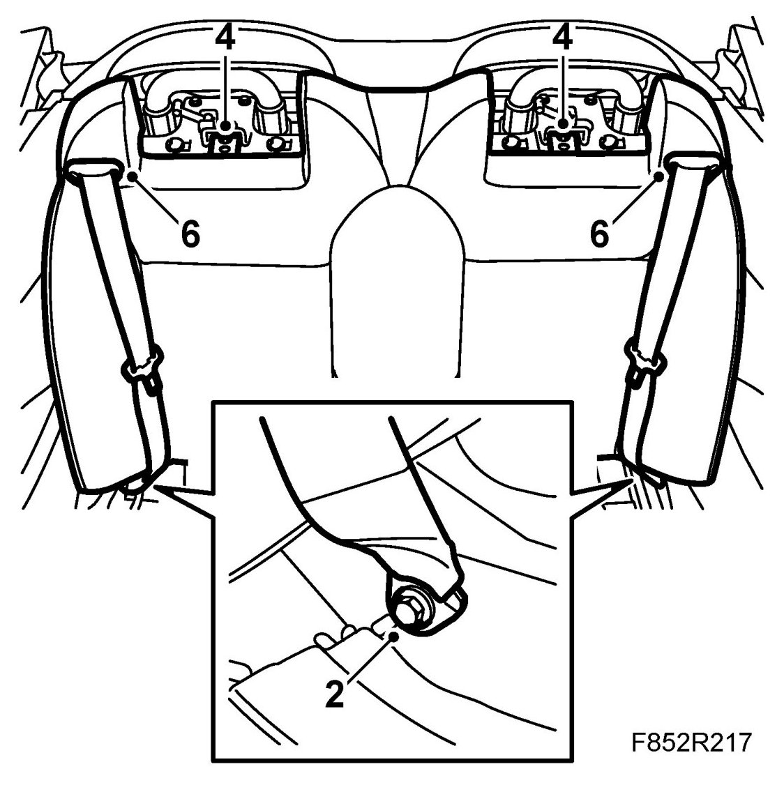
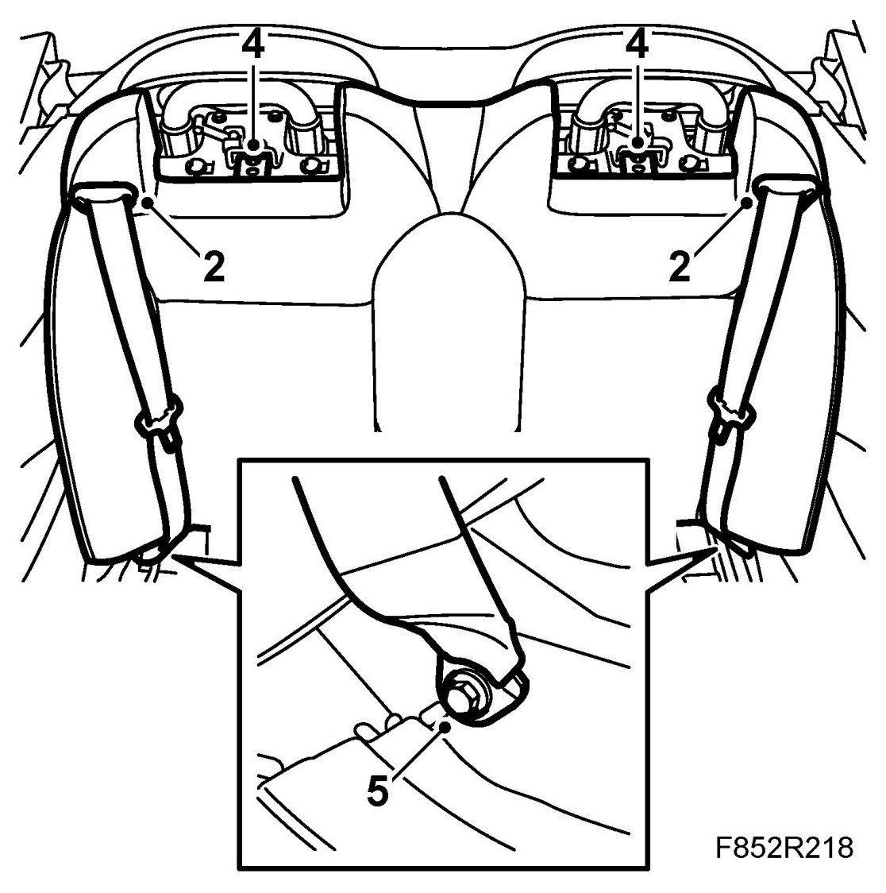

Backrest, Rear Seat, CV
Backrest, Rear Seat, CV
To remove
1. Remove rear seat cushion.
2. Remove the left and right seatbelt lower fixings.

3. Remove the rear head restraint.
4. Remove the backrest cushion upper fixing screws.
5. Pull the backrest cushion forwards at the bottom. Lift the cushion.
6. Remove the seatbelt guides from the backrest cushion.
7. Pull the seatbelt out of the guides and backrest cushion.
8. Lift out the backrest.
To fit
1. Lift the backrest into place.
2. Guide the seatbelts into the backrest cushion and guides, and fit the guides in the backrest cushion.

3. Press the backrest cushion into the lower fixings on the right and left sides.
4. Fit the backrest cushion upper fixings.
5. Fit the seatbelt lower fixings.
Tightening torque: 45 Nm (33 lbf ft)
6. Fit rear seat cushion.
7. Fit the rear head restraint.